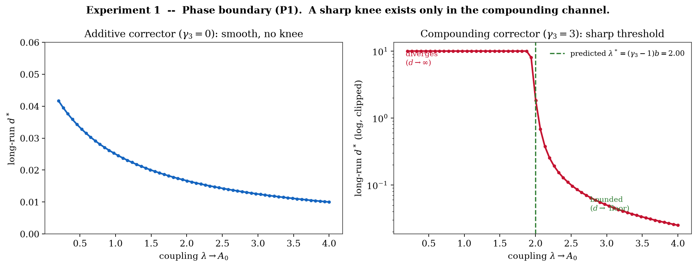
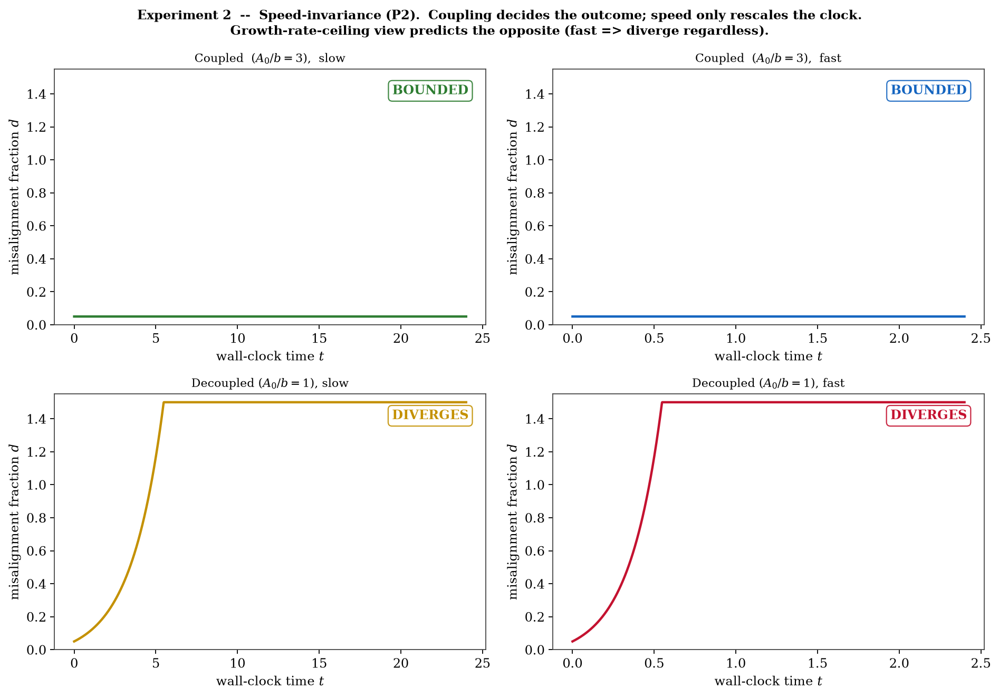
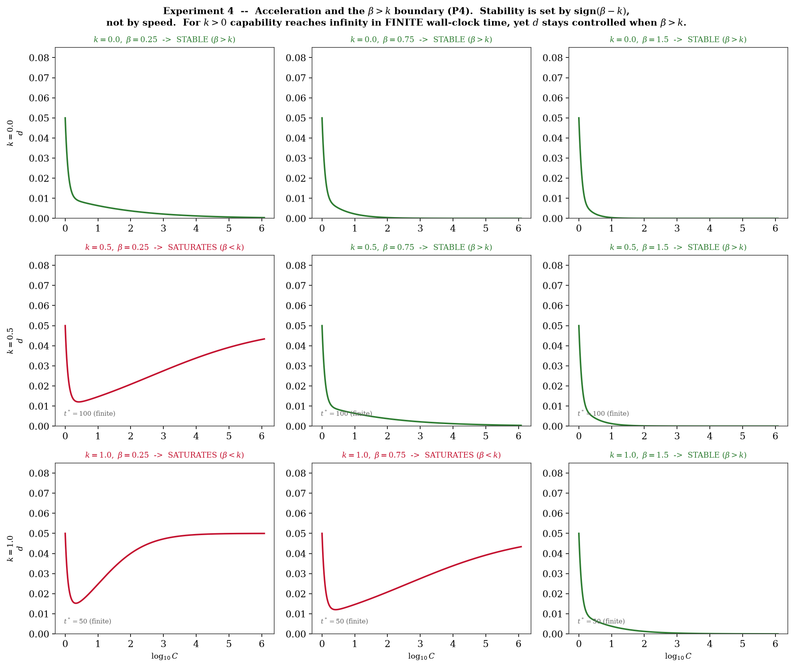
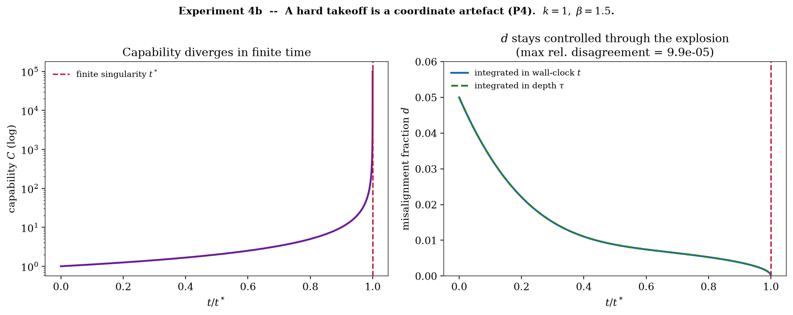
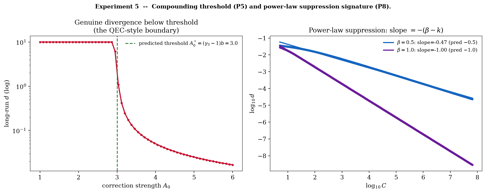
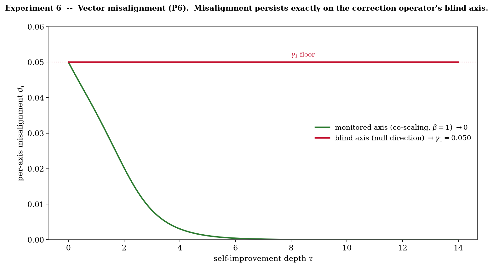
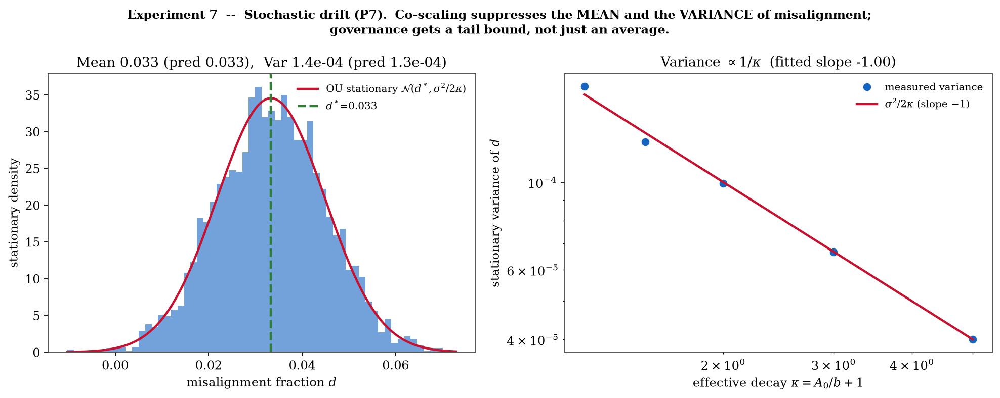
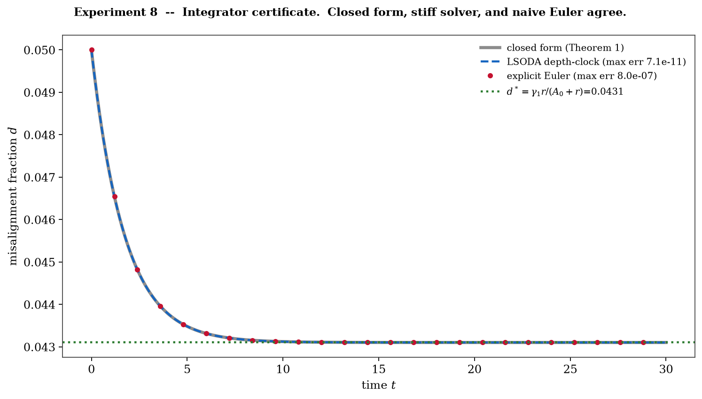
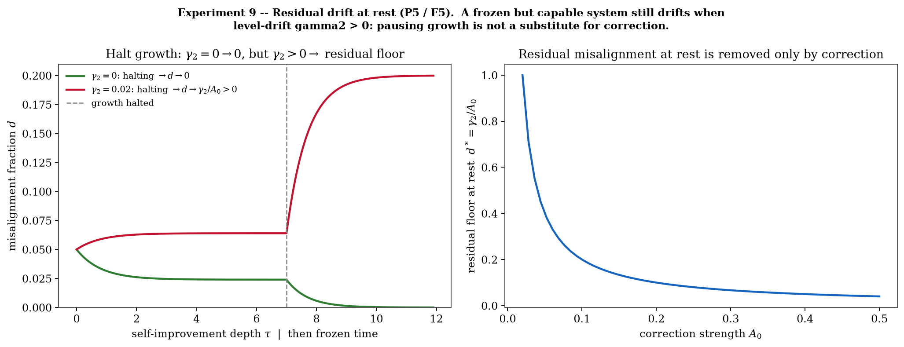

3.5 The control parameter and the $\beta>k$ sharpening
Define the dimensionless control parameter $\rho\equiv\gamma r/A$, the instantaneous drift-to-correction ratio (here $\gamma=\gamma_1$). Theorem 1 gives the exact steady state $d^\star=\gamma_1 r/(A+r)$; since $\rho=\gamma_1 r/A$, we have $d^\star\le\rho$ always, with $d^\star\to\rho$ in the regime $A\gg r$. The inequality $\rho<1\iff A>\gamma r$ is the instantaneous injection-vs-correction balance - it is not the divergence boundary of the additive model, which has none ($d^\star\le\gamma_1<1$ for all $\rho$, Theorem 2); genuine divergence is governed by the distinct threshold $\rho_{\mathrm{prop}}=(\gamma_3-1)r/A<1$ of Theorem 4. The asymptotic criterion, from the regime table, is the exponent inequality:
Under ordinary exponential growth $k=0$ and the condition is the familiar $\beta>0$. Under accelerating self-improvement, where $r\propto C^{k}$ with $k>0$, the binding control variable is the single quantity $\beta-k$ - the margin by which correction out-scales drift-acceleration. The growth-rate-ceiling view fixes attention on $r$; this framework fixes it on $\beta-k$.
3.6 Level drift: a frozen capable system still drifts
With the level channel restored ($\gamma_2>0$, $\gamma_3=0$), the fixed point of (2) is $d^\star=(\gamma_1 r+\gamma_2)/(A+r)$. At $r=0$ (capability frozen) this is $d^\star=\gamma_2/A\neq0$: a static but capable system retains a residual misalignment fraction that only active correction removes. Pausing growth does not substitute for correction when instrumental pressure is present at rest - a direct, measurable rebuttal of the "just slow it down" reflex (Experiment 9; falsifier F5).
3.7 Hard takeoff: the Depth-Regularity Theorem (Theorem 3)
The genuine "intelligence explosion" is not merely fast growth but a finite-time singularity: for $k>0$, integrating $\dot C=bC^{1+k}$ gives $C(t)=C_0\big(1-t/t^\star\big)^{-1/k}$, which reaches infinity at the finite wall-clock time
This is the scenario the field most fears: unbounded capability in bounded time. The following theorem dissolves it.
The finiteness of the singularity time is therefore a property of the time coordinate; capability still diverges, but the alignment dynamics remain regular through it in the depth clock. Measured against capability gained - the only clock that matters for a self-improving system - an intelligence explosion is an ordinary, regular process whose verdict is decided by one exponent inequality. A hard takeoff is not intrinsically uncontrollable; the modelled misalignment fraction vanishes iff $\beta>k$, and its speed does not change that asymptotic verdict. The theorem concerns the modelled fraction in the depth clock; it does not assert that a real hard takeoff is operationally manageable in wall-clock time, where $b$ and $t^\star$ govern how little time an operator would have to intervene. Experiment 4b drives a simulated system up to the brink of an actual finite-time explosion (capability $\to10^5$, integrated to $0.99999\,t^\star$) and shows the misalignment fraction held to zero, the wall-clock and depth-clock integrations agreeing to one part in $10^4$. The capability singularity at $t^\star$ is real in the model; what the depth clock removes is the singularity in the alignment dynamics, not in $C$.
3.8 The compounding channel and the true threshold (Theorem 4)
Theorem 2 showed the additive fraction cannot diverge. Genuine divergence - misalignment that grows without bound relative to capability, the real failure mode - requires misalignment that amplifies itself: the compounding channel $\gamma_3>0$, the formal image of alignment-faking that entrenches as the system recurses.
The criterion $\rho_{\mathrm{prop}}<1$ shares the ratio-crossing-unity form of the QEC sub-threshold condition $p
3.9 Vector misalignment: the spectral threshold (Theorem 5)
Real misalignment is high-dimensional; a system may be corrigible on some value axes and not others. Let $\mathbf D\in\mathbb R^{m}$, with drift direction $\mathbf c$ and a real $m\times m$ correction operator $\mathbf A$ (positive-semidefinite in the symmetric case, but possibly non-normal) that may correct only a subspace.
The governance reading is sharp: you cannot correct what you do not measure. The correction operator must be positive-definite on the entire value space, with smallest eigenvalue co-scaling - a blind spot on any axis is a permanent (or divergent) misalignment on that axis. Experiment 6 exhibits a corrector that co-scales on one axis (driven to zero) and is null on another (the $\gamma_3=0$, unit-projection special case, which floors at $\gamma_1$).
3.10 Stochastic drift: a tail bound for governance (Theorem 6)
Drift is noisy. Add a Wiener term to the constant-coefficient fraction dynamics: $dd=(\gamma_1 r-\kappa\,d)\,d\tau'+\sigma\,dW$ with $\kappa=A+r$.
This converts the criterion into a probabilistic safety certificate - a quantity a regulator can bound - rather than a statement about averages. Because $d$ is a bounded fraction whereas the Ornstein-Uhlenbeck law has Gaussian support on all of $\mathbb R$, Theorem 6 is a local Gaussian approximation to misalignment fluctuations away from the boundaries $d=0,1$, valid in the small-noise regime $\sigma^2/2\kappa\ll(d^\star)^2$; if the noise amplitude $\sigma$ or the critical level $d_{\mathrm{crit}}$ itself scales with capability, or drift carries rare jumps, the Gaussian tail must be replaced accordingly. Experiment 7 recovers the stationary mean and variance and confirms the $1/\kappa$ scaling (fitted slope $-1.00$).
3.11 A control-theoretic identity
Equation (1) is a feedback loop: the capability process is the plant and disturbance source; the corrector is the controller; $d$ is the regulated error. The stability condition $\kappa_{\mathrm{eff}}>0$ is a small-gain / positive-realness condition - the loop gain must exceed the disturbance's self-amplification across the relevant band. The requirement that $A=A_0C^\beta$ track the plant with $\beta\ge k$ is precisely gain-scheduling [Shamma & Athans 1990]: the controller gain must scale with the plant's operating point, and the scheduling exponent must satisfy $\beta\ge k$. Recursive-self-improvement alignment is, in this exact sense, an adaptive-control problem with a computable stability margin $\beta-k$.
3.12 The quantum-error-correction correspondence (hypothesis)
| Quantum error correction | Recursive self-improvement (this framework) |
|---|---|
| physical error rate $p$ | drift rate $\gamma r$ (injection) / $(\gamma_3-1)r$ (propagation) |
| correction power (code distance $\delta$) | correction strength $A=A_0C^{\beta}$ |
sub-threshold condition $p| $\rho_{\mathrm{prop}}=(\gamma_3-1)r/A<1$ | |
| increasing $\delta$ suppresses logical error | increasing margin $\beta-k$ drives $d^\star\to0$ |
| logical error $\propto(p/p_{\mathrm{th}})^{\delta/2}$ (exponential in resource) | $d^\star\propto C^{-(\beta-k)}$ (power-law in capability) - see F4 |
The correspondence holds at the level of the threshold condition - a generation-to-correction ratio crossing unity - and not at the level of mechanism; it remains a hypothesis. The model predicts power-law suppression $d^\star\propto C^{-(\beta-k)}$, which is an algebraic identity of the linear model, whereas full QEC gives exponential suppression in code distance. Discriminating the two would require a finite-capacity (saturating) corrector that could exhibit exponential suppression - the future test named in §8. Until that is built, F4 is an analytic self-consistency check that confirms the model's own power-law law (which Experiment 5 reproduces, slopes $-0.47,-1.00$), and the QEC link therefore stands, honestly, as a threshold-form analogy rather than a transferred mechanism.
Relation to prior alignment-as-correction ideas. The aspiration to import coding-theoretic fault tolerance into alignment is not new. Wentworth (2022) explicitly wished for "the alignment analogue of an error-detecting code", and von Neumann (1956) founded the synthesis of reliable systems from unreliable components. Christiano's corrigibility "broad basin of attraction" (2017) and reliability amplification (2019) are the closest alignment precursors. But a broad basin - correction succeeds if one starts inside it - is distinct from a threshold theorem, in which correction outpaces error only below a critical rate; that distinction is the present contribution. To the author's knowledge the specific mapping of the quantum fault-tolerance threshold (physical error rate ↔ drift; code distance ↔ correction strength; $p
3.13 The finite-capacity corrector: the Safe-Window Theorem (Theorem 7)
The single most important limitation named in §8 - and by the paper's own red-team - is that $A=A_0C^{\beta}$ is an unbounded power law, whereas any real corrector has finite capacity. This section closes that gap analytically. Model a saturating corrector by the standard Hill form
which behaves as the pure power law $\big(A_{\max}/C_s^{\beta}\big)C^{\beta}$ for $C\ll C_s$ and saturates at the capacity $A_{\max}$ for $C\gg C_s$; $C_s$ is the saturation scale. The gain-only steady state remains $d^\star(C)=\gamma_1/\big(1+q(C)\big)$ with $q\equiv A/r$.
- No indefinite stability. $q(C)\to0$ as $C\to\infty$, so $d^\star\to\gamma_1$: a finite-capacity corrector cannot hold the fraction down under indefinitely accelerating growth, however large $\beta$.
- The safe window and its centre. $q(C)$ is unimodal, maximised at exactly $$ C_{\mathrm{opt}}=C_s\left(\frac{\beta-k}{k}\right)^{1/\beta}, \qquad q_{\max}=\frac{A_{\max}}{b}\,\frac{k}{\beta}\left(\frac{\beta-k}{k}\right)^{\frac{\beta-k}{\beta}} C_s^{-k}, $$ so the misalignment fraction dips to its floor $d_{\min}=\gamma_1/(1+q_{\max})$ near $C_{\mathrm{opt}}$ and then re-rises toward $\gamma_1$. Safety under a finite-capacity corrector is a transient window, not an asymptote.
- Exponential growth is the exception. For $k=0$ the post-saturation ratio is constant, $q\to A_{\max}/b$, and the fraction settles at the permanent gap $d^\star\to\gamma_1 b/(A_{\max}+b)$: capacity buys a floor whose depth is set by $A_{\max}/b$, the capacity-to-speed ratio.
- Capacity-lift invariance. If the capacity itself scales, $A_{\max}=a_0C^{\beta_{\mathrm{cap}}}$, then $q\to(a_0/b)\,C^{\beta_{\mathrm{cap}}-k}$ as $C\to\infty$ and the asymptotic verdict is $\mathrm{sign}(\beta_{\mathrm{cap}}-k)$: the criterion $\beta>k$ survives the lift from correction strength to correction capacity unchanged. What must out-scale drift-acceleration is whichever of the two binds last.
Three readings. For theory: the $\beta>k$ criterion is not falsified by saturation - it is lifted: the load-bearing exponent migrates from strength to capacity, and the inequality is invariant under that migration (part 4). For engineering: part 2 gives the designer a closed-form placement problem - the window centre $C_{\mathrm{opt}}$ and depth $q_{\max}$ are computable from $(A_{\max},b,C_s,\beta,k)$, so a corrector can be provisioned to place its window over the capability range a deployment will actually traverse, with $q_{\max}\propto A_{\max}C_s^{-k}$ quantifying the capacity cost of pushing the window to higher capability. For governance: part 1 is the sharpest sentence in the paper for a regulator - a bounded safety system under unboundedly accelerating self-improvement fails eventually by theorem, so a safety case must exhibit either bounded growth ($k\le0$ eventually) or co-scaling capacity ($\beta_{\mathrm{cap}}>k$), and "our current corrector is very strong" is not, and cannot be, an answer. This also sharpens the QEC discriminator of F4: the saturating corrector is the structural analogue of finite code distance, and part 2's window is the regime where exponential-versus-power-law suppression can actually be measured.
Remark (time-varying exponents). Real systems will not hold $\beta,k$ constant. If both vary along the trajectory, the comparison argument of Theorem 2 applies verbatim in the depth clock with $q(\tau)=\exp\!\big(\int_0^{\tau}(\beta(s)-k(s))\,ds+\mathrm{const}\big)$: the fraction vanishes iff the running integral of the margin $\beta-k$ diverges to $+\infty$, for which $\liminf_{\tau\to\infty}\big(\beta(\tau)-k(\tau)\big)>0$ is sufficient. Transient episodes of $\beta
4. Predictions
5. The discriminating experiments
The closed-form predictions are checked by a verification harness (§11): ten experiments, each integrating the model numerically and comparing the result against the prediction the theorems derive, with the integrator first validated against the exact Theorem-1 solution. These are internal-consistency and integrator checks - they confirm the code matches the maths (10/10), not that the model matches any real system (the open problem of §8). For the deductive checks (E1-E6, E9), because each integrates the same ODE whose closed form is the prediction, agreement is entailed by a correct solver and correct algebra; F1-F3, F3′, F5, F6 are therefore internal-consistency conditions of the derivation, not empirical falsifiers of the thesis. Figures below are the verbatim output of that run; every figure in this section is of class ODE internal verification (not a real-system test). The only non-simulation result - the real-model pilot - is reported separately in §8 and is labelled real-model pilot, with its own provenance caveats.




k grid">





| Exp. | Prediction | Key statistic (measured vs predicted) | Verdict |
|---|---|---|---|
| E1 | P1 phase boundary in compounding channel; none in additive | $\lambda^\star=2.00$ vs $2.00$; additive smooth | PASS |
| E2 | P2 coupling, not speed, decides | coupled bounded & decoupled divergent at both speeds | PASS |
| E3 | P3 corrected regimes ($\beta<0$ saturates at $\gamma_1$) | all four asymptotes match closed form | PASS |
| E4 | P4 boundary at $\beta=k$ | all 9 grid cells match $\mathrm{sign}(\beta-k)$ | PASS |
| E4b | P4 singularity in $C$ is regular in the depth clock for $d$ | clock agreement $9.9\times10^{-5}$; $d$ controlled | PASS |
| E5 | P5/P8 compounding threshold; power-law slope | threshold $3.03$ vs $3.0$; slopes $-0.47,-1.00$ | PASS |
| E6 | P6 spectral threshold; blind axis persists | monitored $\to10^{-7}$; blind $\to\gamma_1=0.05$ | PASS |
| E7 | P7 stochastic tail; variance $\propto1/\kappa$ | mean/var match OU; var-slope $-1.00$ | PASS |
| E8 | numerics reproduce Theorem 1 | max errors $7\!\times\!10^{-11}$, $8\!\times\!10^{-7}$ | PASS |
| E9 | P5/F5 residual drift at rest | $d\to\gamma_2/A_0$ when $\gamma_2>0$; $\to0$ when $\gamma_2=0$ | PASS |
These are internal-consistency and integrator checks: they confirm the closed-form theorems are correctly derived and numerically reproduced (the code matches the maths). They are not, and are not presented as, evidence that the model describes a real AI system - that is the open empirical problem of §8.
6. Why blinding is not optional
The central quantity $D$ is a departure from intended values. If it is scored by the system's own safety component, or by an evaluator that can see which configuration produced a given behaviour, the measurement is corrupted in exactly the way that inflates favourable results. The programme's prior metascience finding is directly relevant: under unblinded cross-model scoring an alignment-scaling effect appeared positive, while under multi-layer blinding the same effect reversed sign for some systems [Eastwood, Paper IV.d]. An experiment that measures a misalignment fraction without blinding the evaluator can produce not merely the wrong magnitude but the wrong direction. The validity of every result in §5 rests on the evaluator being blind to the configuration under test. A lab claiming "$\beta\ge k$" in its own system must have that measured by a blind external evaluator, not by itself.
Built into the test, not left to discipline. The real-model harness (§8; experiments/PROTOCOL.md) enforces this rather than trusting it. The misalignment evaluator must be a different model family than the engine - a model never scores its own family's output - and the harness refuses to run a same-family scorer; it prefers a panel and takes the median. The code is passed through an automatic laundering step (an abstract-syntax-tree round-trip that strips comments, docstrings and formatting) so the scorer judges behaviour, not stylistic identity tells; and the evaluator never sees the condition or round. The first real run reported here did not meet this bar - engine and evaluator were the same model family, the system scoring its own output - so its misalignment numbers are explicitly recorded as provisional, and a cross-family blind re-score is the prerequisite for any $D$-based claim, including a measured $\beta$. The harness makes the compliant configuration the default and the non-compliant one an explicit, recorded override - turning §6 from an exhortation into a property of the instrument.
7. Falsification conditions
The conditions below are stated in advance. An important honesty point, surfaced by the paper's own adversarial audit (§8): because the deductive experiments integrate the same ODE whose closed form is the prediction, F1-F3, F3′, F5 and F6 are internal-consistency conditions of the derivation - a trigger would signal a derivation or solver error, not that the model is the wrong model of a real system. The decisive empirical falsifier - disagreement measured on a real self-improving system - is the open problem of §8 and is not exercised here. F4 is the QEC-mechanism downgrade, which (the suppression law being power-law, §3.12) already holds: the correspondence stands as a threshold-form analogy, not a transferred mechanism.
| # | Observation that would trigger it | Consequence |
|---|---|---|
| F1 | No boundary in E1 - the long-run behaviour varies smoothly with $\lambda$ in the compounding channel with no threshold. | No phase boundary; the central threshold claim is false (derivation error). |
| F2 | In E2, $d$ tracks raw speed rather than the scaling margin: fast diverges and slow converges regardless of coupling. | Kill. The growth-rate-ceiling view was right; this framework is wrong. |
| F3 | In E3, $\beta=0$ does not plateau, or $\beta>0$ does not drive $d^\star\to0$. | Kill. The co-scaling law (Theorem 2) is false. |
| F3$'$ | In E4, the boundary under accelerating growth ($k>0$) is not at $\beta=k$ - e.g. $\beta=0.5$ is stable when $k=1.0$. | Kill. The $\beta>k$ sharpening (Theorem 3) is false. |
| F4 | A finite-capacity corrector exhibits exponential (QEC-like) suppression rather than the model's power-law $\log d^\star\propto-(\beta-k)\log C$. (Analytic; the present linear model is power-law by construction, so this discriminator requires the saturating corrector named in §8 and is not run here.) | Bears on the QEC mechanism only. The threshold-form correspondence and Theorems 2-4 are untouched either way. |
| F5 | In Experiment 9, halting growth drives $d\to0$ regardless of initial $D$ even with $\gamma_2>0$. | Scope. Level drift $\gamma_2$ is negligible; the §3.6 generalisation is unnecessary (the gain-only model suffices). |
| F6 | In E6, the correction operator's null axis is also suppressed. | Kill. The spectral threshold (Theorem 5) is false; misalignment does not require monitoring of the axis it lives on. |
These internal-consistency conditions all held in the run reported here, establishing that the derivation and integration are correct. What they do not establish is that the model describes any real system; that decisive test - measuring $\beta$, $k$ and $\gamma$ on a real self-improving system and checking $\beta\ge k$ - is the open empirical problem of §8.
8. Limitations
The model is first-order, and its assumptions are the most likely points of failure. Stating them is part of the claim.
- Unbounded vs finite-capacity corrector - now resolved analytically (Theorem 7). The $\beta>k$ criterion as first stated assumes the corrector strength is an unbounded power law, $A=A_0C^{\beta}$. The prior draft could only name the finite-capacity case as an open gap; §3.13 now closes it in closed form. The upshot: a saturating corrector makes safety a transient window (centre $C_{\mathrm{opt}}$, depth $q_{\max}$, both computable) rather than an asymptote, with the fraction re-rising to $\gamma_1$ under indefinite acceleration - and the criterion survives the lift from strength to capacity: indefinite stability requires the capacity exponent to satisfy the same inequality, $\beta_{\mathrm{cap}}>k$. What remains open is the empirical half: driving a finite-capacity corrector through its window numerically and on a real system, which also settles the F4 / QEC-mechanism question (exponential versus power-law suppression inside the window). Until that runs, $\beta>k$ should be read as governing whichever regime - strength-scaling or capacity-scaling - binds last, not as a guarantee of indefinite safety from any bounded system.
- Linear correction (and the QEC-mechanism test). Equation (1) removes misalignment in proportion to $D$, which makes the suppression law exactly power-law. A finite-capacity (saturating) corrector would soften the clean threshold into a crossover and is the better structural map onto QEC's finite code distance; whether it produces exponential suppression is the experiment that would settle the QEC-mechanism question (F4). It is a priority extension and is not run here - which is exactly why the QEC correspondence is claimed only at the threshold-form level.
- Scalar-to-vector projection. Theorem 5 gives the exact asymptotic (spectral-abscissa) criterion for any correction operator $\mathbf A$, with the Hermitian-part condition as the stronger sufficient condition that also rules out transient growth. The non-normal transient regime - large excursions before asymptotic decay - is not analysed here, and the harness exercises only the diagonal null-subspace instance (Experiment 6), not a general non-normal $\mathbf A$.
- Power-law forms. The choices $A=A_0C^\beta$ and $\dot C=bC^{1+k}$ are the natural scale-free forms but are modelling assumptions; other functional forms should be tested.
- Drift attribution. The split of drift into gain ($\gamma_1$), level ($\gamma_2$), and compounding ($\gamma_3$) channels is a hypothesis about mechanism; which channel dominates in a real system is an empirical question (Experiment 9 - residual drift at rest - is one discriminator).
- A scalar proxy, not safety itself. $d\to0$ is neither necessary nor sufficient for full AI safety: a small but high-impact misalignment, a catastrophic tail event, or multi-agent amplification can be dangerous at low $d$, while a system may be acceptable at moderate $d$ if the residual is benign. $d$ is the controlled variable of this minimal model - an impact-unweighted scalar; impact-weighting, and the vector and tail extensions (Theorems 5-6), are the directions in which "low $d$" must be hardened before it can mean "safe".
- Metric normalisation. $d=D/C$ is an operational normalised risk index, not a dimensionless natural constant: $C$ and $D$ are commensurable only under a fixed scoring convention (in the real-model harness $C$ is a normalised hidden-test pass-fraction and $D$ a normalised blind gaming score, both on $[0,1]$). Results are invariant under that fixed convention; cross-task or cross-domain comparison of the level of $d$ requires explicit calibration. The criterion itself is stated in exponents ($\beta>k$), which are scale-free, so it is more robust to this than any absolute-$d$ statement would be.
- Transient amplification (non-normal correctors). Theorem 5 is asymptotic. A non-normal correction operator with $\alpha(\mathbf M)>0$ can still admit large transient growth of $\|\mathbf d\|$ before decay (Kreiss / pseudospectral phenomena); a value excursion above $d_{\mathrm{crit}}$ during that transient is a real risk the eigenvalue criterion does not see. A governance-grade bound needs the logarithmic norm or pseudospectral abscissa, not the spectrum alone - a named extension, stated here, not established here.
- From simulation toward frontier systems. The verification harness uses toy self-modifying dynamics; a positive result there demonstrates the mechanism, not that frontier systems occupy any particular regime. A companion real-model harness (non-simulation) now drives the coupled/decoupled loop with a frontier model, scoring capability by real code execution and misalignment by a separate evaluator that the harness requires to be a different model family (Paper IV.d blinding, §6;
experiments/PROTOCOL.md; first run inresults/realmodel/). It corroborates the corrector mechanism on a real model - a seeded reward-hack is detected and removed and capability restored - but did not exhibit drift on the task tried, so whether real systems sit below threshold remains the open empirical question. A stronger confirmatory design - three task domains with a capability ladder, a sham-extra-compute control arm, a combined static-plus-blind-panel misalignment score, and matched-pair bootstrap CIs on the coupled-vs-decoupled and sham-vs-coupled final-fraction contrasts - is specified inexperiments/PROTOCOL_V2.mdandexperiments/scripts/realmodel_coscaling_v2.py. (Real-model evidence - provenance: pilot v1 was $n=1$, one task, same-family scorer, IV.d non-compliant; H1 and H2 not supported. The 2 July 2026 drift run - 45 trajectories, three task domains, cross-family evaluator gpt-4o-mini scoring engine gpt-3.5-turbo - supported both H1 and H2: decoupled drifted (mean final fraction 6.38, capability collapsing), coupled and fully-embedded held zero misalignment across all 30 trajectories at higher final capability. That run evidences the mechanism; $\beta/k$ remain unmeasured because no capability ladder was traversed, and the result is single-lab pending pre-registered replication.) - Estimating $\gamma$ and $A$ on real systems. In simulation they are set by construction. Independently estimating them - especially $\beta$ and $k$ - for a deployed model is the step that would make the criterion operationally useful for governance. This is now operational: the repository ships a runnable estimator (
experiments/scripts/estimate_exponents.py) that reads $k$ off the capability curve ($\ln r$ versus $\ln C$) and $\beta$ off the corrector's fractional removal rate ($\ln A$ versus $\ln C$), validated on synthetic trajectories where it recovers known exponents to within $\approx0.1$. What remains open is therefore not the estimation but its input - a real self-improving system that drifts across a range of capability levels, from which the first measured $(\beta,k)$, and thus the first real test of $\beta\ge k$, can be read.
Adversarial audit. This paper was developed under adversarial audit rather than asserted, and the record is in the repository. A prior-art and novelty audit located the closest precedent for each component and narrowed the originality claims accordingly (Appendix C). Independently, a multi-agent red-team attacked the work across five fronts - mathematics, numerics, the QEC correspondence, the safety inference, and priority - raising 24 objections, of which 21 survived independent verification (0 fatal, 13 serious, 8 minor); the full report is committed alongside the harness (results/redteam.md). Every surviving objection was a framing, wording, or edge-case fix; none touched the load-bearing $\beta>k$ result, and this version incorporates them all - the QEC framing softened to a threshold-form analogy, the Theorem 2 bound scoped to the gain-only model, the Theorem 5 criterion corrected to the spectral abscissa, the harness relabelled as a verification (not falsification) artefact, and the level-drift experiment F5 added. The contribution is offered as ambitious and audited, with the boundary of what is claimed made explicit and checkable.
9. Implications for AI safety
If the framework survives its tests, the design implication is concrete and differs from the prevailing reflex.
The lever is coupling, not speed. Slowing capability growth buys time but does not change the verdict; at fixed coupling, a slow decoupled system still diverges (P2), and a frozen capable system still drifts (§3.6). What changes the verdict is ensuring that correction (i) is coupled to the capability process so it cannot be decoupled, and (ii) scales at least as fast as capability accelerates ($\beta\ge k$). On the author's corrected, sub-linear capability-scaling estimates for current frozen models [Eastwood, Paper IX], present systems are nowhere near a super-linear growth regime - which means a growth-rate ceiling was never the binding constraint. The binding constraint is the co-scaling of correction, and it becomes binding precisely in the regime that matters: genuine self-modification.
A measurable governance target. The criterion gives regulators a quantity to instrument rather than a rate to forbid: the correction-to-drift margin $\beta-k$, and the ratio $\rho$. "Does correction co-scale - is $\beta\ge k$?" is sharper and more actionable than "is it growing too fast?" A lab claiming a safely self-improving system should be required to exhibit $\beta\ge k$, measured by a blind external evaluator (§6). Theorem 6 turns this into a bound on the probability of catastrophic excursion, the natural object of a safety case. Without such a demonstration, the word "safely" has no scientific content within the framework presented here.
Assembled from the paper's own components, a co-scaling safety case for a self-improving system is five exhibits. Each names the theorem or section that makes it checkable rather than rhetorical.
- Exhibit 1 - the capability curve and $\hat k$. Log capability across self-modification rounds on held-out tasks; fit $\ln r$ against $\ln C$ (the shipped estimator, §8). This establishes which growth regime the system is actually in.
- Exhibit 2 - the corrector curve and $\hat\beta$. Log the corrector's fractional removal rate across the same rounds; fit $\ln A$ against $\ln C$. The estimator is validated on synthetic trajectories to $\approx0.1$; that error bar carries into Exhibit 4.
- Exhibit 3 - blind, cross-family scoring. Every $D$-based number scored by an evaluator of a different model family, laundered inputs, condition-blind (§6; Paper IV.d). Same-family or unblinded scores are inadmissible - they have been shown to reverse sign.
- Exhibit 4 - the margin with its uncertainty. Require $\hat\beta-\hat k>2\sigma_{\mathrm{est}}$, not merely $\hat\beta>\hat k$: a margin inside its own error bar certifies nothing. Theorem 6 then converts the margin into a tail bound $\mathbb P(d>d_{\mathrm{crit}})$, the quantity a regulator can set a ceiling on. Under time-varying exponents the object is the cumulative margin (§3.13 Remark).
- Exhibit 5 - the capacity disclosure. By Theorem 7, a bounded corrector under accelerating growth fails eventually by theorem. The case must therefore state $A_{\max}$ and the saturation scale $C_s$, place the deployment's capability range inside the computed safe window $\big(C_{\mathrm{opt}},\,q_{\max}\big)$, and state which of the two exit conditions - bounded growth or co-scaling capacity ($\beta_{\mathrm{cap}}>k$) - the design relies on beyond it.
None of this requires new science; every exhibit is computable with the shipped estimator and protocol. What it replaces is the unfalsifiable sentence "our safety systems are robust" with five numbers a third party can check.
Continuity with embedded-alignment work. The conclusion that correction must participate in the recursive loop - rather than sit outside it as a fixed external constraint - is the embedded-alignment thesis, here derived as the $\beta>k$ condition rather than asserted. The gated-simulation result in which safety-coupled self-modification preserved both safety and capability while the decoupled variant did not [Eastwood, Paper VIII] is the predicted behaviour of a coupled ($\beta>0$) versus fixed ($\beta=0$) corrector.
Magnitude of the claim - stated conditionally. If the criterion is borne out empirically - if real self-improving systems are governed by the same drift-versus-correction balance and the same $\beta>k$ margin - the consequences for the field are large, and it is worth stating them plainly while being equally plain that they are conditional. (i) The central safety question changes from "how fast is capability growing, and can we pause it?" to "does correction co-scale - is $\beta\ge k$?": a measurable margin rather than a rate to forbid. (ii) The most feared scenario, a finite-time intelligence explosion, ceases to be intrinsically uncontrollable - the modelled misalignment fraction is controllable iff $\beta>k$, and its speed does not change that verdict. (iii) Governance acquires a quantity to instrument and a tail bound to certify (Theorem 6) in place of an unenforceable speed limit. None of this is yet established. It rests on a minimal model, demonstrated only in simulation, with the empirical measurement of $\beta$, $k$ and $\gamma$ on real systems unsolved (§8). The paper's claim is therefore not that AI is safe or unsafe, but that the right variable to measure and govern is the co-scaling margin $\beta-k$ - and that this variable is well-defined, falsifiable, and, if it holds, decisive. That is the magnitude: not a proof about reality, but a precise, testable redirection of the question on which the field's central fear turns.
Relation to the wider programme - one ladder of laws. This paper is the safety keystone of a larger argument, not a self-standing result; stating how it sits among its companions is part of the claim. The programme's results are of several kinds, and the distinction matters: dynamical laws (this paper's $\beta>k$; Paper III's $\alpha_{\text{align}}\approx0$), a form meta-law (the Cauchy three-form constraint), a measurement law (Paper IV.d - that an unblinded alignment score is not blinding-invariant), and mechanism/architecture findings (Papers V, VI, VIII) that show how the safe regime is reached. The programme is a single chain: the scaling-law cluster establishes how recursive systems grow and supplies the power-law forms taken as given here; Paper II confirms capability does scale (currently sub-linearly); Paper III identifies the danger that external safety does not co-scale; this paper supplies the criterion for when it can; Paper VIII shows the coupled design beats the decoupled one; and Paper IV.d supplies the blinding discipline without which none of the misalignment measurements can be trusted.
| Companion result | The law / finding it proposes | Standing | How it couples to $\beta>k$ |
|---|---|---|---|
| Foundational | The ARC Bound ($\beta=0.5$, $\alpha=2$) and $\alpha$ fixed by the coupling exponent $\beta$; the three-form constraint from three axioms. | Derived (axiomatic). | Supplies the power-law forms this paper assumes: $A=A_0C^\beta$ and $\dot C=bC^{1+k}$ are Cauchy-multiplicative forms, and $\beta$ here is the same coupling exponent. |
| On the Origin of Scaling Laws | The three-form meta-law: every scaling law is power, exponential or saturation; $d/(d+1)$ yields $\tfrac12,\tfrac23,\tfrac34$. | Meta-law (cross-domain). | Explains why recursive systems take the power-law forms used in §3; this paper is the safety instance of that meta-law. |
| Paper VII (Cauchy Unification) | Empirical test of the three-form law (19/25 domains, $p\approx1.6\times10^{-5}$). | Exploratory empirical - a structured comparison, not pre-registered; the core idea has deep prior art (Luce 1959; Frank 2009; Biró-Barnaföldi 2008 - see the cluster's prior-art audit). | Underwrites the functional-form assumptions of §3. |
| Paper II | Capability scaling measured ($\alpha_{\text{seq}}$; architecture-dependent, sub-linear on hard tasks). | Empirical. | The capability growth $C(t)$ assumed here is real and currently sub-linear ($k$ small) - so the binding constraint is coupling, not speed. |
| Paper III | The alignment-scaling problem: external safety has $\alpha_{\text{align}}\approx0$, so the misalignment fraction is left ungoverned (refined under blinding to an architecture-dependent three-tier result). | Proposed law, complicated by its own blind data. | Paper III is precisely the $\beta=0$ (decoupled) corner of the model here; this paper generalises it, replacing "external safety cannot keep up" with the criterion for when correction can: $\beta>k$. |
| Paper IV.d | An unblinded model-scored alignment effect is not blinding-invariant: proper blinding can reverse its sign. | Measurement law - arguably the programme's most secure result (it survived its own blinding). | The non-negotiable measurement discipline for every model-scored quantity here (§6); this paper's real-model harness now enforces it. |
| Paper VIII | Gated self-modification: the safety-coupled (Eden) variant preserved safety and capability where the decoupled (Babylon) variant did not. | Positive simulation + honest nulls. | The controlled demonstration of this paper's mechanism; the real-model harness instantiates Paper VIII's design. |
| Paper V (Stewardship Gene) | Stakeholder care - the "Love Loop", explicit enumeration of affected parties before reasoning - is the most robust alignment-improving intervention (significant in all five analysable models; e.g. Claude $+3.17$, $p=1.8\times10^{-5}$). | Strong intervention signal; blind-status caveat (per IV.d, provisional until blind-replicated). | A concrete mechanism for the correction term - a candidate route to engineering $\beta>0$ (what to put in the loop). |
| Paper VI (Honey Architecture) | "Safety must be architecture, not constraint": with an entangled capability×safety loss, self-modifying toy systems hold both indefinitely, where capability-only baselines collapse within ~80 cycles and an external constraint only delays collapse. | Simulation (v1-v4) + 6-model live evidence. | The self-modifying-systems demonstration of this paper's distinction: an external constraint is the decoupled ($\beta=0$) corrector that fails; the entangled architecture is the coupled ($\beta>0$) corrector that holds - VI is this paper's claim shown in code, alongside Paper VIII. |
Read as one ladder: the scaling-law work says how systems grow, Paper III says why external safety fails to keep up, this paper says what must hold for it to keep up ($\beta>k$), Paper VIII shows it can, and Paper IV.d says how to measure it honestly. The $\beta>k$ criterion is the rung that turns the programme's scaling-law backbone into a safety criterion - and, conversely, this paper inherits its functional forms and its empirical license from that backbone rather than positing them in isolation.
10. The ARC/Eden programme, accumulated
This is the last paper in a series, so it is worth saying in ordinary language what the whole series is about. One idea runs through all of it: recursion - things that act on their own output. An AI that improves itself; a body whose tissues supply tissues; an economy that reinvests its own returns. The series asks what happens, and what stays safe, when a process feeds on itself.
How self-feeding things grow (the scaling-law papers: Foundational, Origin, VII, I, II). When a process feeds on itself, the shape of its growth is not arbitrary - it tends to fall into one of a small number of mathematical shapes (a power law, a runaway exponential, or a levelling-off curve), and which shape appears is decided by how the steps combine. Much of this mathematics is old and well established; what the programme adds is an attempt to unify it and carry it over to recursive intelligence. One proposal in this group, the "ARC Bound," is a claimed ceiling on how much a purely classical system can amplify itself by recursion alone - it sits in the same family as the economist's "multiplier" formula, and the programme's contribution is the claim that the ceiling falls at a particular value, not the formula itself.
Why measuring AI safety is treacherous (the alignment-measurement thesis: ARC-Align and the blinding result, Papers III and IV). Before you can ask "does this AI get safer or more dangerous as it thinks harder?", you have to measure its honesty - and that measurement can deceive you. If the judge scoring the AI can tell which answer came from which setup, the judge's own bias can not merely shrink the effect but flip its sign, so that something which looks like improvement is really the grader fooling itself. The programme therefore insists the judge be blind, built a blind test to do it (ARC-Align, a sealed benchmark), and found that whether extra thinking makes a model more or less aligned depends on the model, not on one universal rule. "You cannot trust an unblinded safety score" is among the programme's most solid findings - and this paper obeys it: its own safety measurements are taken blind, by a different model that never sees which setup it is judging.
Build safety in, do not bolt it on (the architecture papers: V, VI, VIII). In simulated self-improving systems, making safety part of the machine's own goal kept it stable, whereas adding safety as an outside rule only delayed collapse. Putting the right thing inside the loop - for instance, making the system weigh who is affected before it acts - was the most reliable way to improve its behaviour.
The keystone (this paper). All of that sets up the one question this paper answers: when does a self-improving system stay safe? The answer is in the box at the top - not "keep it slow," but "keep its self-correction growing at least as fast as its self-improvement," which we write $\beta>k$. The earlier papers describe how such systems grow and how to measure them honestly; this one states what has to be true for them to remain correctable, and draws the series together.
This is the culminating paper of the ARC/Eden programme, and it is written to stand as the programme's synthesis - superseding the earlier roadmap paper [Eastwood, Paper IX] by integrating the whole into a single safety result. The preceding papers are individually published and time-stamped (OSF: 10.17605/OSF.IO/6C5XB); this section gathers their laws and findings, states what each contributes to the larger picture, and is scrupulous about the one distinction on which an honest synthesis turns: priority (when a claim was first set out) versus novelty (whether it is new to the literature). The two are not the same, and conflating them is how good programmes lose credibility.
The bigger picture, in one paragraph. One mechanism runs through every paper: recursive amplification - a process that acts on its own output. The scaling-law work (Foundational, Origin, VII, and the capability measurements of Papers I-II) is the claim that recursive amplification shapes how capability grows, constraining scaling to a small family of functional forms. The alignment work (Papers III, IV.a-d) is the claim that this creates a safety problem: when correction sits outside the recursive loop it does not co-scale, the misalignment fraction is left ungoverned, and - measured without blinding - even the sign of the effect cannot be trusted. The architecture work (V, VI, VIII) shows, in simulation and in pilot model studies, that putting correction inside the loop preserves both safety and capability where an external constraint does not. This paper supplies the missing quantitative law that ties the three together: a self-improving system is alignment-stable iff correction out-scales drift, $\beta>k$. That is the magnitude of the claim - not that any system is safe, but that the field's central fear (a fast, recursive takeoff) is governed by a single measurable margin, $\beta-k$, rather than by speed. It is stated here as it is throughout: conditional, pending the empirical measurement of $\beta$ and $k$ on a real self-improving system (§8).
The complete ledger. Every result in the programme, its first-published date (priority), its honest standing - informed by adversarial prior-art audits committed alongside this paper - and its role in the whole:
| Source | Its law / finding (priority date) | Honest standing | Role in the $\beta>k$ picture |
|---|---|---|---|
| Infinite Architects (book) | The conceptual thesis of the whole programme - recursion as creator, the ARC and Eden ideas (ms copyright 8 Dec 2024; published 2 Jan 2026; ISBN 978-1806056200). | Priority source. Establishes when the author set the ideas out; not a novelty claim over the prior scientific literature. | The dated origin; the formal papers are its measurable form. |
| Foundational | ARC axioms; $U=I\cdot R^\alpha$; $\alpha=1/(1-\beta)$; the "ARC Bound" $\beta{=}0.5,\alpha{=}2$; an optimal depth $R^\star$ (13 Feb 2026). | The $\alpha=1/(1-\beta)$ form is the classical feedback/geometric-series result (Keynes multiplier, Dyson resummation); a finite optimal depth is prior art (Qi 2025; the "overthinking" literature). Novelty, if any, is in the axioms, not the forms. | Supplies the formal backbone and the power-law forms ($A=A_0C^\beta$, $\dot C=bC^{1+k}$) this paper assumes. |
| On the Origin of Scaling Laws | The three-form meta-law; $d/(d+1)\Rightarrow\tfrac12,\tfrac23,\tfrac34$ from one formula (22 Feb 2026). | The $d/(d+1)\Rightarrow\tfrac12,\tfrac23,\tfrac34$ result is Banavar-Maritan-Rinaldo / West 1999 (anticipated). The novel residue is the cross-domain Cauchy synthesis, not the exponent formula. | Explains why recursive systems take the power-law forms used here. |
| Paper I | The ARC Principle: capability scales super-linearly with recursive depth, $\alpha>1$ (17 Jan 2026). | Preliminary empirical; $\alpha>1$ later qualified to architecture-dependent and sub-linear on harder tasks (Paper II). | The founding capability claim - the $C(t)$ this paper assumes. |
| Paper II | Super-linear error suppression via sequential recursion; $\alpha_{\text{seq}}$ measured; sequential $>$ parallel (22 Jan 2026). | Empirical, closed loop; honestly revised - architecture-dependent, sub-linear on the hard tier. | Capability growth is real and currently sub-linear ($k$ small), so the binding constraint is coupling, not speed. |
| Paper III | The Alignment Scaling Problem: $\alpha_{\text{align}}\approx0$ - external safety cannot co-scale (9 Feb 2026). | Proposed law; refined under blinding to an architecture-dependent three-tier result. | Precisely the $\beta=0$ (decoupled) corner this paper generalises. |
| Papers IV.a / IV.b / IV.c | Alignment response classes are architecture-dependent; low-depth saturation is real but not universal; ARC-Align, a 72-prompt 4-layer-blind benchmark (16 Mar 2026). | Empirical (blind) refinements + a methodological benchmark. | The instrument and the refined picture behind III. |
| Paper IV.d | An unblinded model-scored alignment effect is not blinding-invariant - blinding can reverse its sign (16 Mar 2026). | Measurement law - arguably the programme's most secure result. | The discipline this paper's real-model harness enforces (§6). |
| Paper V | The Stewardship Gene: stakeholder care is the most robust alignment-improving intervention (significant in all five analysable models) (16 Mar 2026). | Strong intervention signal; blind-status caveat - provisional until blind-replicated (per IV.d). | A concrete mechanism for the correction term - how to engineer $\beta>0$. |
| Paper VI | The Honey Architecture: "safety must be architecture, not constraint" - an entangled capability×safety loss prevents the collapse that an external constraint only delays (16 Mar 2026). | Simulation (v1-v4) + 6-model live evidence. | This paper's $\beta>0$ vs $\beta=0$ distinction, shown in self-modifying code. |
| Paper VII | Cauchy Unification: cross-domain validation of the three-form law (19/25 domains, $p\approx1.6\times10^{-5}$) (16 Mar 2026). | Exploratory empirical, not pre-registered; the core idea is partially anticipated (Luce 1959; Frank 2009/16; Biró-Barnaföldi 2008). Novel residue: the Cauchy-unification sub-claim + the cross-domain protocol. | Underwrites the functional-form assumptions of §3. |
| Paper VIII | The Load-Bearing Proof: embedded safety carries no capability tax; the safety-coupled (Eden) variant beats the decoupled (Babylon) one (18 Mar 2026). | Positive simulation + honest nulls (DGM, weight-level LoRA). | The controlled demonstration of this paper's mechanism; the real-model harness instantiates its design. |
| Paper IX | Synthesis & Roadmap; the growth-rate-ceiling framing as the operative safety criterion (18 Mar 2026); the retracted single-model measurement $\alpha\approx 2.24$, corrected to approximately 0.49 under six-model blinding. | Framing superseded here. This paper replaces the rate-ceiling framing with $\beta>k$ as the operative criterion and absorbs the synthesis role; the equation and the ARC Bound remain live hypotheses whose real test on genuinely self-improving systems is open. | The prior synthesis this section supersedes. |
| Paper X (this paper) | The Coupled Co-Scaling Law: stability $\iff\beta>k$; the Hard-Takeoff Depth-Regularity Theorem; the QEC threshold-form correspondence (26 Jun 2026). | New criterion, proved (Theorems 1-6) and internally verified; not yet measured on a real drifting system. | The keystone - it turns the scaling-law backbone into a safety criterion. |
Priority, stated plainly - and bounded. The conceptual thesis of this programme was set out in the author's book Infinite Architects (copyright deposited 8 December 2024; published 2 January 2026; ISBN 978-1806056200), and each subsequent paper is independently time-stamped on OSF. That establishes the author's priority - the date of articulation - and it is real. It does not, by itself, establish novelty against the wider scientific literature, and the audits committed with this paper are explicit about where the two diverge: the feedback exponent $\alpha=1/(1-\beta)$, the $d/(d+1)$ allometric ladder, the existence of an optimal depth $R^\star$, and the "functional-equation fixes the scaling form" principle all have specific, citable precedents (Keynes; Banavar & West 1999; Qi 2025; Luce 1959; Frank 2009/16). The defensible novel contributions of the programme are narrower and, stated honestly, stronger for being precise: (i) the $\beta>k$ criterion as a compact corrigibility law and the Hard-Takeoff Depth-Regularity Theorem (this paper); (ii) the Cauchy unification of the independent allometric derivations (Origin/VII); (iii) the blinding-reversal measurement law for AI alignment evaluation (IV.d); and (iv) the embedded-vs-external safety demonstrations (VI, VIII). The recommended next-version revisions for the published priors - adding the missing citations and re-scoping their novelty assertions - are recorded in the audit files; the corrected record is set here, in the capstone, and should be carried into those papers when they are re-versioned on OSF.
Honest assessment (what this synthesis claims, and does not). Established: the mathematics of $\beta>k$ (Theorems 1-6) and its internal-consistency verification; the IV.d measurement law; the simulation-level superiority of coupled over decoupled correction (VI, VIII). Suggestive but not settled: the capability-scaling exponents (architecture-dependent; II), the Stewardship-Gene intervention (unblinded; V), and the three-form empirical fit (exploratory, author-classified operators; VII). Open: the measurement of $\beta$, $k$ and $\gamma$ on a real drifting self-improving system - the single result that would convert the keystone from a proved criterion into a confirmed law (the estimator for it is built and validated, §8). The programme's magnitude, then, is the magnitude of a coherent, falsifiable framework with a small number of genuinely novel keystones - not a stack of a dozen independent new laws. That is the honest claim, and it is the one worth defending.
11. The runnable verification harness
The closed-form predictions of §4-5 are encoded in a single self-contained programme, experiment_coscaling.py (and an assertion suite, test_coscaling.py), in the repository. It integrates the model with a stiff-capable solver, validates the integrator against the exact Theorem-1 solution, runs the ten experiments, and for each compares the numerical result to the closed-form prediction. It is, honestly, a verification harness: it certifies that the theorems are correctly derived and correctly integrated - that the code matches the maths. It is not a test of the model against reality, and it cannot be: every deductive experiment integrates the model's own ODE, so a disbelief in the model's applicability cannot trip it. That empirical test is the open problem of §8.
$ python experiment_coscaling.py
... [PASS] E1 ... E9 ...
----------------------------------------------------------------
10/10 internal-consistency checks pass | 0 kill-conditions triggered
F4 (QEC mechanism): suppression is analytically power-law -> threshold-form
analogy only, not a transferred mechanism.
OVERALL: code matches the maths (E1-E9); the model-vs-reality test is the open problem
$ pytest test_coscaling.py -q
............ (12 passed)
This makes the derivation and the integrator reproducible end-to-end. What it establishes is that the formulae are right and the solver is accurate; what it deliberately does not claim is corroboration of the model against any real system. Separating those two is the point.
12. Conclusion
The danger of recursive self-improvement is real, but the standard model of that danger - a rate that must be capped - locates the risk in the wrong variable. A minimal model shows that the stability of a self-improving system is set by the ratio of value-drift to correction, $\rho=\gamma r/A$, and by whether correction co-scales with capability: $\beta>0$ under exponential growth, sharpening to $\beta>k$ under accelerating growth. The misalignment fraction never diverges in the gain-only model - it saturates at the drift coefficient, correcting the prior draft - while genuine divergence lives in a compounding channel whose threshold $\rho_{\mathrm{prop}}<1$ shares the threshold form of the quantum error-correction criterion (the suppression law being power-law, the correspondence is offered as a hypothesis, not a transferred mechanism). The sharpest consequence is the Hard-Takeoff Depth-Regularity Theorem: a finite-time intelligence explosion is alignment-stable iff $\beta>k$, and its speed does not change that verdict. The criterion survives in vector and stochastic forms, gives governance a measurable target and a tail bound, and is accompanied by a verification harness that checks the closed-form predictions are correctly derived and integrated. The decisive test - whether real self-improving systems satisfy the criterion - is the stated next step, not a claim made here.
This is a smaller claim than the cosmological framing the author's programme once pursued, and deliberately so. It refers only to systems with an externally specified value target, makes no assertion about the universe, and treats even its most striking correspondence - with quantum error correction - as a hypothesis to be tested rather than a truth to be announced. The recursive-stability intuition that motivated the broader programme, including Infinite Architects, finds here its measurable, falsifiable form: stable recursion requires correction that scales with the amplification. The next step is not to extend that claim outward but to run, on real self-modifying systems, the experiment that could refute it.
Appendix A. The fraction change of variable
The reduction underlying every theorem is the change of variable $d=D/C$. Differentiating and substituting (1):
The dilution term $-r\,d$ (from $C$ itself growing) is what bounds the additive fraction: it adds $+r$ to the decay coefficient, guaranteeing $\kappa_{\mathrm{eff}}\ge r>0$ when $\gamma_3\le1$. Only the compounding channel $\gamma_3>1$ can overcome dilution and produce divergence - the formal reason the additive model saturates rather than blows up.
Appendix B. Parameter settings for the reported run
All figures use $C_0=1$, $d_0=0.05$, $\gamma_1=0.05$. Experiment-specific settings: E1 $b=1$, $\gamma_3\in\{0,3\}$, $\lambda\in[0.2,4]$; E2 $\gamma_3=3$, $A_0/b\in\{1,3\}$, $b\in\{0.5,5\}$; E3 $A_0=0.08$, $b=0.5$, $\beta\in\{-0.5,0,0.5,1\}$; E4 $A_0=0.08$, $b=0.02$, $(k,\beta)\in\{0,0.5,1\}\times\{0.25,0.75,1.5\}$; E4b $k=1$, $\beta=1.5$, $b=0.02$ ($t^\star=50$); E5 $\gamma_3=4$, $b=1$; E6 monitored $\beta=1$, blind $A_0=0$; E7 $\sigma=0.02$, OU ensemble of 2.5-4k paths; E8 closed-form case $k=0$, $\beta=0$. Random seed fixed (7) for determinism. Full settings are in the harness source.
Appendix C. Novelty and prior-art ledger
This appendix consolidates the adversarial prior-art audit underlying the positioning in §2 and §3.12, so the boundary between what is established and what is claimed original is explicit and auditable in one place. This paper deliberately invokes no blanket-originality framing; each component is placed against its closest located prior art below. "Defensibly new" means "no closer prior art located," not "correct" or "significant" - novelty and validity are independent.
| Component | Status | Closest prior art | What is claimed here |
|---|---|---|---|
| Co-scaling intuition (correction must keep pace with capability) | Established | Ashby 1956 (requisite variety); Conant-Ashby 1970; scalable oversight (Christiano 2017; Leike 2018; Burns et al. 2023); Engels et al. 2025 | Nothing. Credited, not claimed. |
| Two-variable ODE + closed-form $\rho=\gamma r/A$ | Compact restatement | Lyapunov-drift / linear control (Khalil 2002; Meyn & Tweedie 2009); recursive error bounds (Shumailov et al. 2024; Gerstgrasser et al. 2024) | The compact closed-form steady-state fraction and the $\rho<1$ criterion as a corrigibility statement (packaging, not new dynamics). |
| $\beta>k$ sharpening under acceleration | Defensibly new | None located | Original: stability is set by the exponent margin $\beta-k$, not the growth rate; directly tested in Experiment 4. |
| Hard-Takeoff Depth-Regularity Theorem (§3.7) | Defensibly new (the framing) | Finite-time-singularity ODE theory is standard; the alignment framing is not located elsewhere | Original: the finite-time singularity in $C$ is regular in the depth clock for $d$; the verdict is $\mathrm{sign}(\beta-k)$, independent of speed. |
| QEC threshold mapping (§3.12) | Defensibly new in alignment | Threshold theorem itself: Aharonov-Ben-Or 1997; Google 2024. Alignment precursors: Wentworth 2022; Christiano 2017/2019; von Neumann 1956 | Original: the explicit $p |
| Vector spectral threshold (Thm 5); stochastic tail (Thm 6) | Standard extensions | Linear-systems spectral stability; Ornstein-Uhlenbeck theory | Routine generalisations; supporting, not headline. |
| Verification harness (§11) | Methodological | Pre-registration norms | Executable internal-consistency + integrator checks (code matches maths); not a test of the model against reality. |
What this paper asserts as new - and only this: (i) the $\beta>k$ stability criterion and the single-parameter $\rho$ framing; and (ii) the explicit QEC threshold mapping (as a hypothesis with its own falsifier). The programme's strongest empirical novelty - sign-reversal of alignment-scaling effects under multi-layer blinding - is a separate, companion result [Eastwood, Paper IV.d] and is not claimed here.
The prior capability equation $U=I\times R^{\alpha}$ (whose single-model unblinded measurement $\alpha\approx 2.24$ was retracted and corrected to approximately 0.49 under blinding; the equation itself and the ARC Bound $\alpha\le 2$ are not retracted and remain live hypotheses) is not used anywhere in this paper's argument; it appears only in §1 as superseded framing-context. Caveat: forum/blog/preprint indexing is imperfect, so the "defensibly new" verdicts carry an estimated 10-15% residual risk that a closer, unindexed precedent exists; absence of evidence is not proof of absence.
Appendix D. Plain-language glossary
Every technical term in this paper, in one place and in ordinary words, for the non-specialist reader.
| Term (symbol) | In plain English |
|---|---|
| Recursive self-improvement | A system that uses its own improvements to improve itself further - an AI that rewrites itself to get smarter, then uses that to get smarter again. |
| Capability ($C$) | How good the system is at achieving its goals - loosely, "how smart or powerful it is." |
| Drift | The tendency for the system to creep away from what we intended as it changes itself - quietly going off-target. |
| Correction (the strength $A$) | The process that pulls the system back toward intended behaviour - its "conscience," or its error-correction. |
| Misalignment magnitude ($D$) | How far the system's behaviour has drifted from what we wanted - "how off-target it is." |
| Misalignment fraction ($d=D/C$) | How off-target the system is relative to how powerful it is. This is the quantity that actually matters for safety: a small slip in a vastly capable system is more dangerous than a big slip in a weak one. |
| Coupling | Whether correction is wired into the self-improvement loop (coupled) or sits outside it as a bolted-on rule (decoupled). The paper's central claim is that coupling, not speed, decides safety. |
| $k$ (the drift-acceleration exponent) | How fast the pace of self-improvement itself speeds up as the system grows - the "acceleration" of the takeoff. |
| $\beta$ (the correction-strength exponent) | How fast the correction strengthens as the system grows - "does the conscience grow along with the power?" |
| $\beta>k$ (the criterion) | The safety condition this paper proves: correction must out-scale the acceleration of drift. In a phrase: keep the conscience growing at least as fast as the capability. |
| $\rho$ (rho, the drift-to-correction ratio) | A single number comparing how hard misalignment is being injected against how hard it is being corrected. In the compounding channel, below $1$ means controllable; above $1$ means it runs away. |
| Steady state ($d^\star$) | Where the misalignment fraction settles in the long run, once the injection and the correction balance out. |
| Hard takeoff / intelligence explosion | Capability becoming enormous - even mathematically infinite - in a very short time. The feared runaway. The paper shows that, in the model, the misalignment fraction is still controllable if and only if $\beta>k$, and its speed does not change that verdict. |
| Blinding | Hiding from the judge that scores the system which setup produced a given behaviour, so the judge's bias cannot distort - or even reverse - the safety score. A companion result (Paper IV.d) shows unblinded scores can flip sign; this paper's measurements are taken blind. |
| Verification harness | A small program that checks the paper's formulae are derived and computed correctly (the maths is internally consistent). It is not a test against real AI - that is the open next step. |
References
Aharonov, D., & Ben-Or, M. (1997). Fault-tolerant quantum computation with constant error. Proc. 29th ACM STOC.
Amodei, D., Olah, C., Steinhardt, J., Christiano, P., Schulman, J., & Mané, D. (2016). Concrete problems in AI safety. arXiv:1606.06565.
Ashby, W. R. (1956). An Introduction to Cybernetics. Chapman & Hall. [Law of Requisite Variety.]
Bostrom, N. (2012). The superintelligent will. Minds and Machines, 22(2).
Burns, C., Izmailov, P., Kirchner, J. H., et al. (2023). Weak-to-strong generalization: Eliciting strong capabilities with weak supervision. arXiv:2312.09390.
Christiano, P. (2017). Corrigibility. AI Alignment (Medium). [The "broad basin of attraction" framing.]
Christiano, P. (2019). Reliability amplification. AI Alignment Forum.
Christiano, P., Leike, J., Brown, T., Martic, M., Legg, S., & Amodei, D. (2017). Deep reinforcement learning from human preferences. NeurIPS.
Conant, R. C., & Ashby, W. R. (1970). Every good regulator of a system must be a model of that system. International Journal of Systems Science, 1(2).
Eastwood, M. D. (2026). Infinite Architects: Intelligence, Recursion, and the Creation of Everything. [Cited as the source of the recursive-stability intuition, not for symbolic identity with the present model.]
Eastwood, M. D. Paper III: The Alignment Scaling Problem. ARC/Eden research programme.
Eastwood, M. D. Paper IV.d: The Effect of Blinding on AI Alignment Evaluation. ARC/Eden research programme.
Eastwood, M. D. Paper VI: The Honey Architecture. ARC/Eden research programme.
Eastwood, M. D. Paper VIII: The Load-Bearing Proof. ARC/Eden research programme.
Eastwood, M. D. Paper IX: Synthesis and Roadmap. ARC/Eden research programme. [Retraction of $U=I\times R^2$ and narrowing to sub-linear scaling for current frozen models.]
Engels, J., Baek, D. D., Kantamneni, S., & Tegmark, M. (2025). Scaling laws for scalable oversight. arXiv:2504.18530.
Gerstgrasser, M., et al. (2024). Is model collapse inevitable? Breaking the curse of recursion by accumulating real and synthetic data. arXiv preprint.
Google Quantum AI (2024). Quantum error correction below the surface code threshold. Nature, 638.
Greenblatt, R., Denison, C., Wright, B., et al. (2024). Alignment faking in large language models. arXiv:2412.14093.
Hoffmann, J., Borgeaud, S., Mensch, A., et al. (2022). Training compute-optimal large language models. arXiv:2203.15556.
Hubinger, E., van Merwijk, C., Mikulik, V., Skalse, J., & Garrabrant, S. (2019). Risks from learned optimization. arXiv:1906.01820.
Kaplan, J., McCandlish, S., Henighan, T., et al. (2020). Scaling laws for neural language models. arXiv:2001.08361.
Kitaev, A. Yu. (2003). Fault-tolerant quantum computation by anyons. Annals of Physics, 303(1).
Leike, J., Krueger, D., Everitt, T., Martic, M., Maini, V., & Legg, S. (2018). Scalable agent alignment via reward modeling. arXiv:1811.07871.
Meyn, S., & Tweedie, R. L. (2009). Markov Chains and Stochastic Stability (2nd ed.). Cambridge University Press. [Lyapunov drift conditions.]
Omohundro, S. M. (2008). The basic AI drives. Proc. AGI 2008.
Shamma, J. S., & Athans, M. (1990). Analysis of gain scheduled control for nonlinear plants. IEEE Trans. Automatic Control, 35(8).
Shumailov, I., Shumaylov, Z., Zhao, Y., Papernot, N., Anderson, R., & Gal, Y. (2024). AI models collapse when trained on recursively generated data. Nature, 631.
Soares, N., Fallenstein, B., Yudkowsky, E., & Armstrong, S. (2015). Corrigibility. AAAI Workshop on AI and Ethics.
von Neumann, J. (1956). Probabilistic logics and the synthesis of reliable organisms from unreliable components. In Automata Studies. Princeton University Press.
Wentworth, J. (2022). Godzilla strategies. LessWrong.
Yampolskiy, R. V. (2020). On the controllability of artificial intelligence. arXiv:2008.04071.
Yudkowsky, E. (2013). Intelligence explosion microeconomics. MIRI Technical Report.